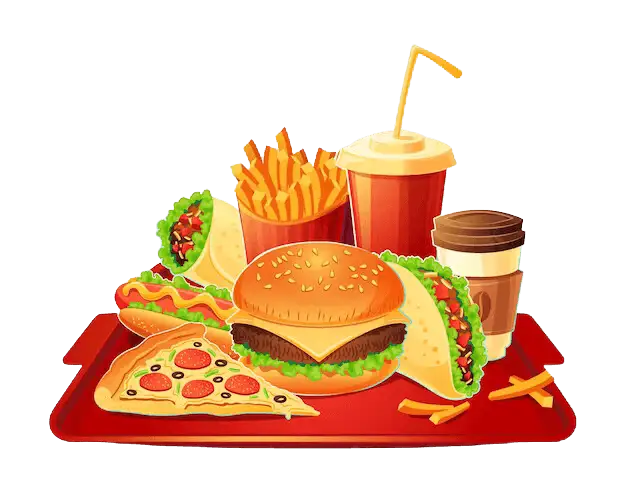
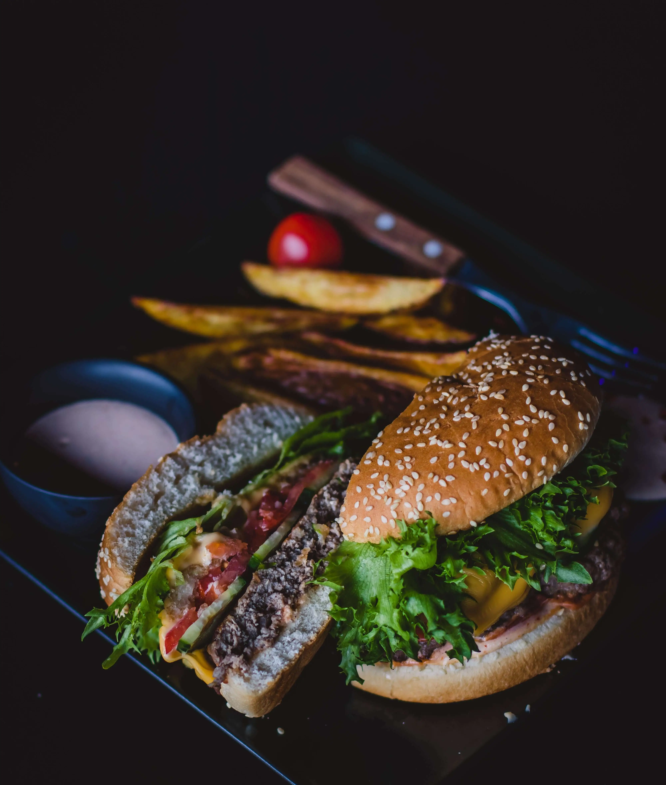
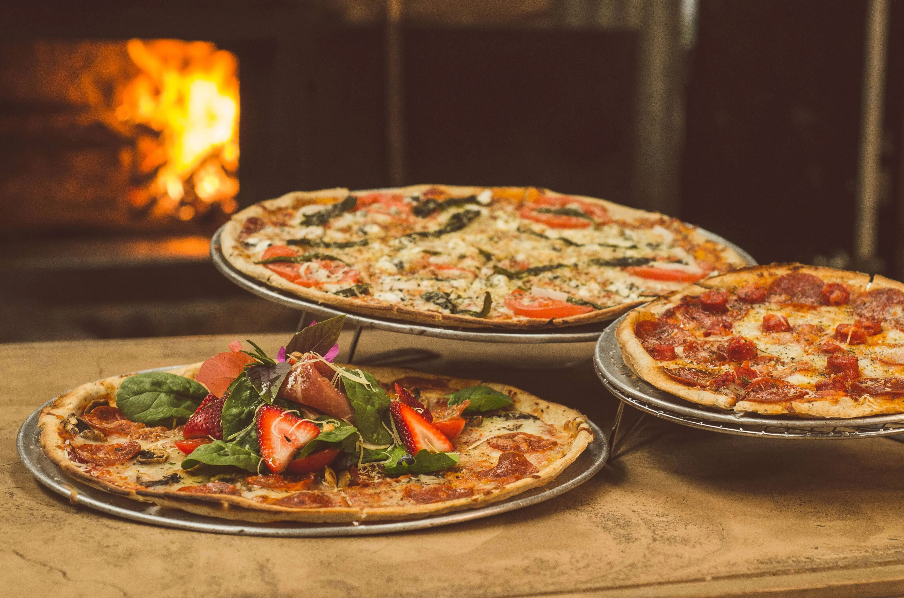
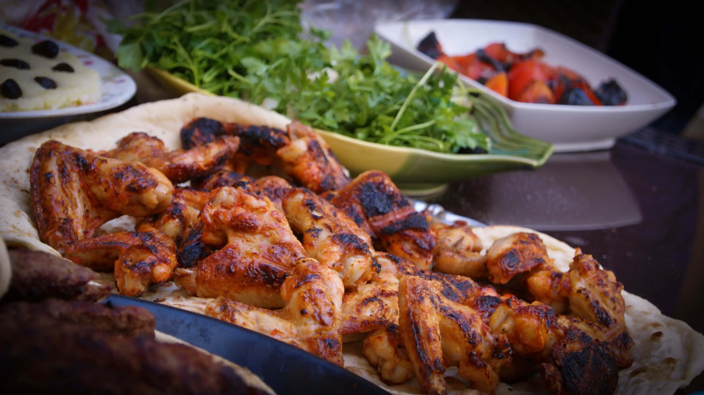
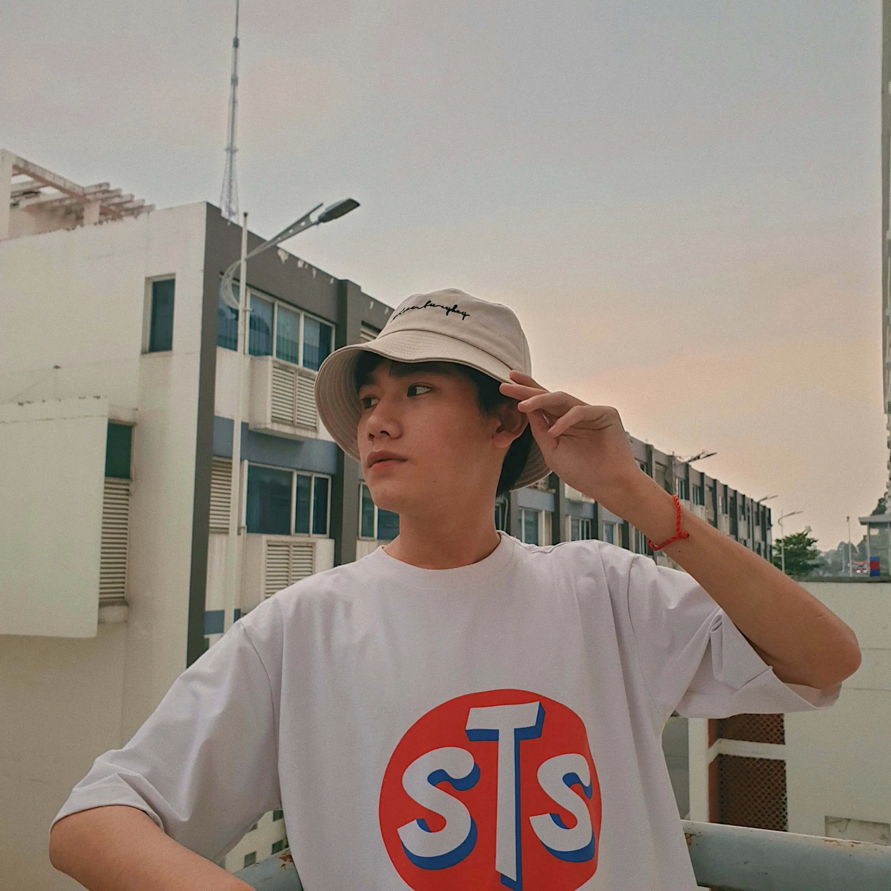
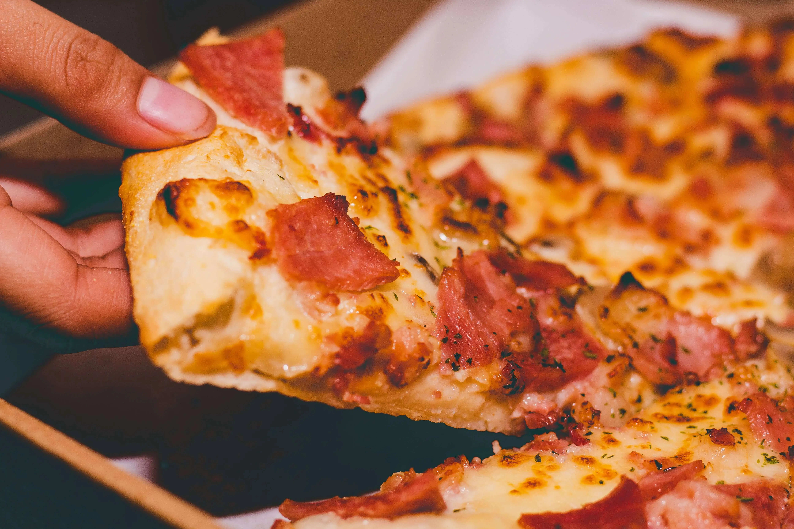
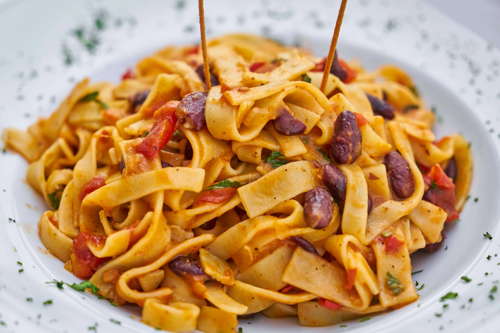
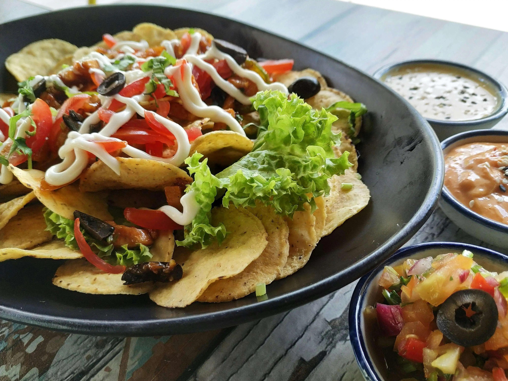

Ako tražite restoran u Novom Sadu u kojem se kvalitetna hrana, prijatan ambijent i ljubazna usluga spajaju u jedinstveno iskustvo, na pravom ste mestu. Otkrijte raznovrstan meni, uživajte u ukusima i pronađite idealno mesto za ručak, večeru ili druženje.
Saznaj više



Pravi restoran nije samo mesto na kojem se jede, već prostor u kojem se stvaraju uspomene. Naš ambijent osmišljen je da pruži udobnost, opuštenost i prijatnu atmosferu. Uživajte u dobroj hrani, razgovoru i trenucima provedenim sa ljudima koji su vam važni.
Planirate ručak, večeru ili okupljanje sa prijateljima? Rezervacija restorana u Novom Sadu omogućava vam da unapred obezbedite svoje mesto i bez žurbe uživate u prijatnom ambijentu. Kontaktirajte nas, rezervišite sto i prepustite se ukusima koji će vaše druženje učiniti još lepšim.

Kada poželite da provedete prijatno veče uz dobru hranu, naš restoran je odličan izbor. Bilo da je u pitanju romantična večera, izlazak sa prijateljima ili posebna prilika, očekuju vas raznovrsna jela, prijatna atmosfera i prostor za stvaranje lepih uspomena. Uživajte u večeri koja spaja ukus, kvalitet i opušteno druženje.


